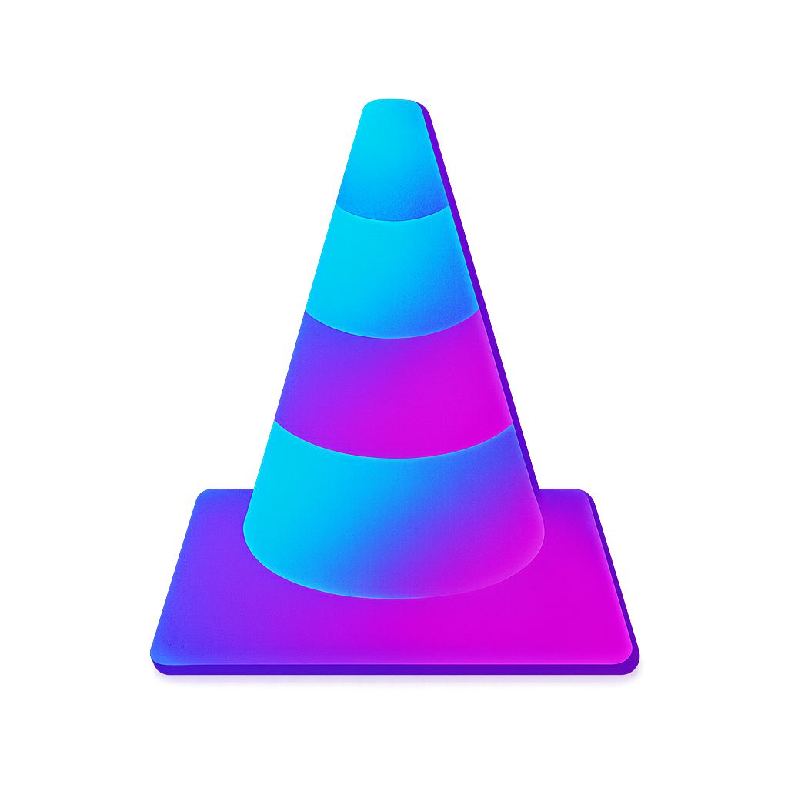

VLC
Disconnected
Discord
Disconnected
Media Preview
Settings
VLC Connection
Discord Integration
TMDb Integration
Admin
Live Status
VLC Status
{}
Discord Status
{}
System Diagnostics
{}
Last Discord Payload
{}
Live Logs
Activity History
Metadata Overrides
| Category | Title | Override |
|---|
Connection Wizard
1) Test VLC Connection
Uses the current Settings values.
{}
2) Check Discord RPC
Shows the server’s Discord connection status.
{}
3) Verify Protected Endpoints
Requires Admin Token from Settings.
{}
Appearance
Theme
Persists in your browser.